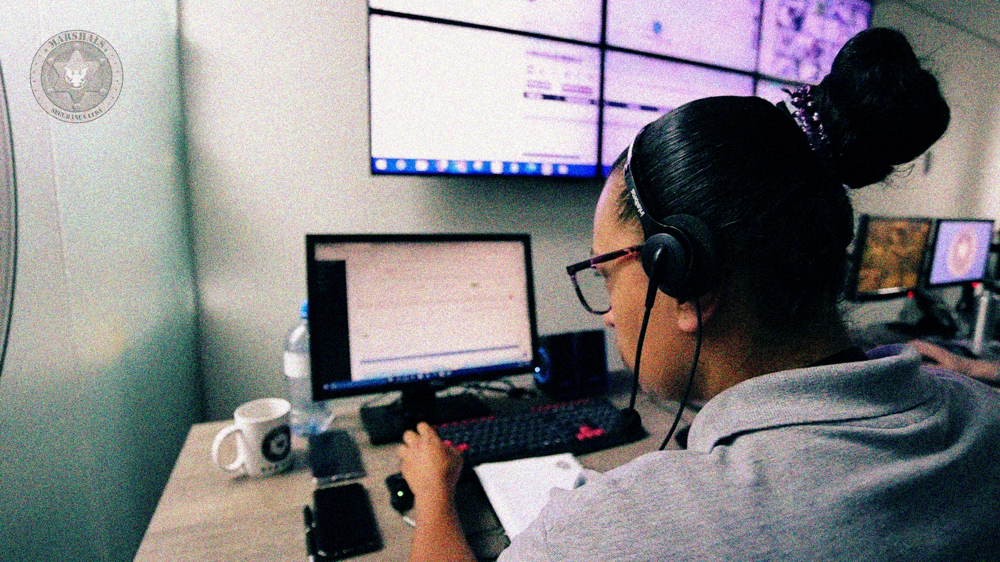
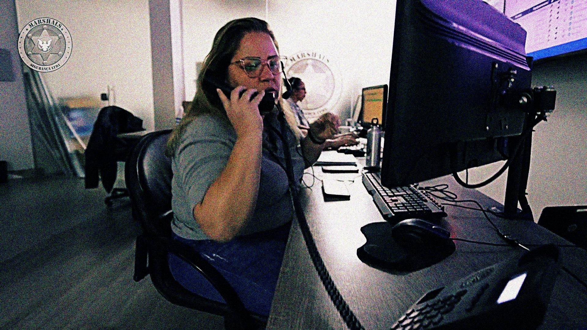
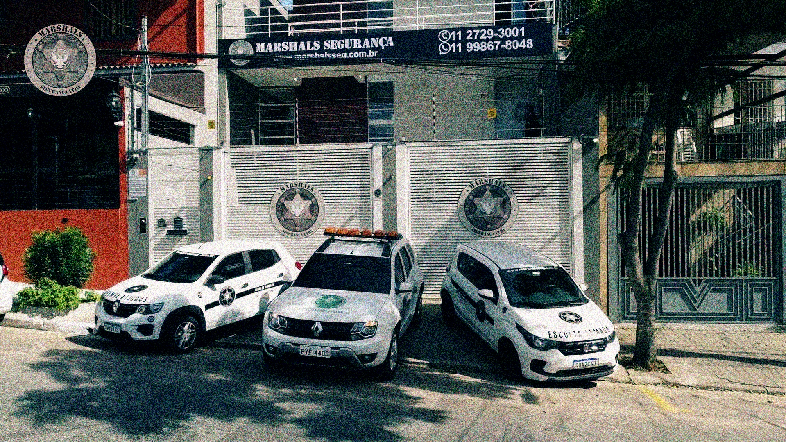
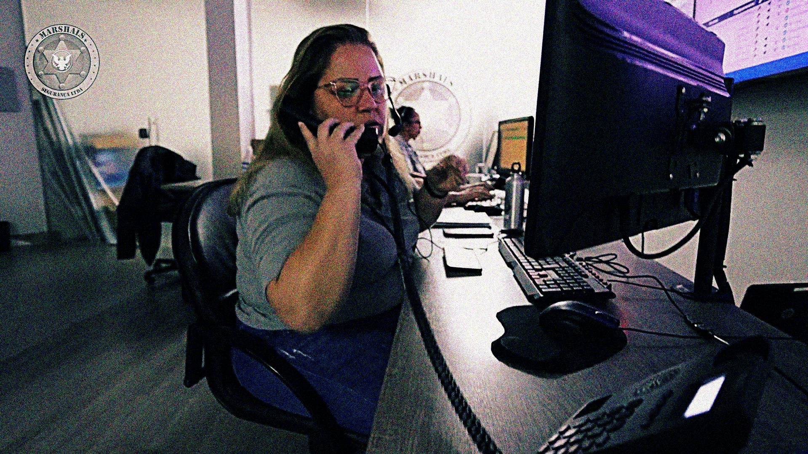
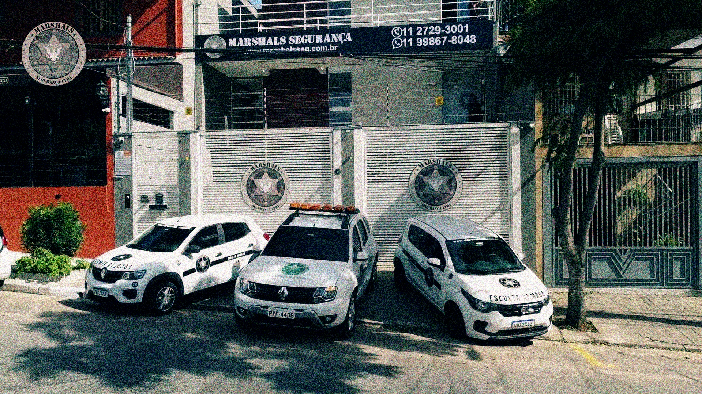
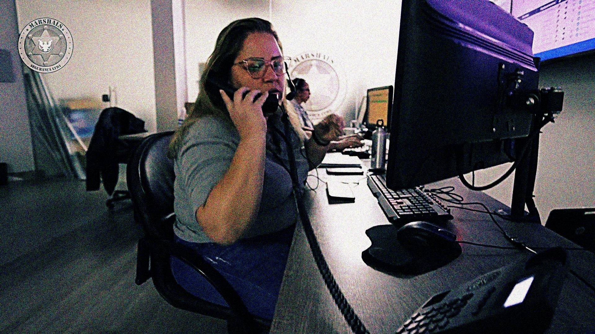
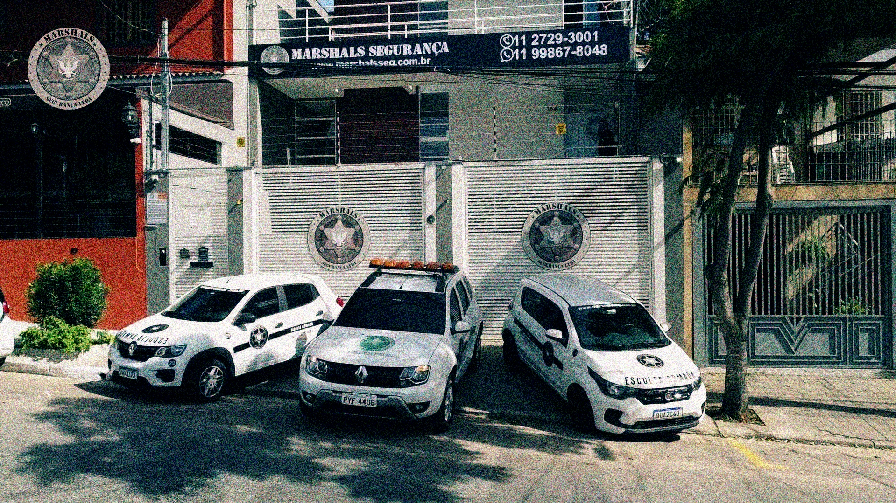
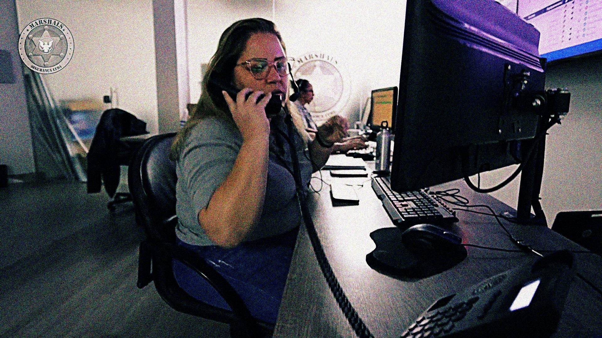
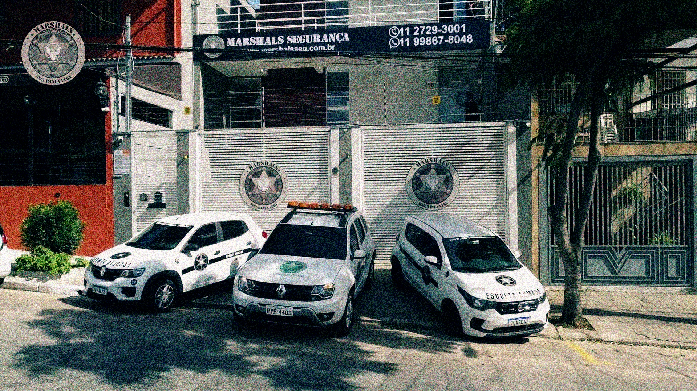

Gostou?
Cadastre-se e entraremos em contato!


 





A Marshals contribui com a segurança social desde 2008, sendo líder no oferecimento de serviços que se dispõem 24 horas por dia a lhe proporcionar seguridade e conforto onde estiver! Com tecnologia de ponta e profissionais especializados nas mais diversas áreas, a Marshals proporciona o melhor atendimento com base na necessidade de cada cliente. Acreditamos que a segurança pessoal nunca foi tão indispensável e essencial quando nos dias de hoje, e é exatamente por isso que, dessa vez, procuramos contribuir e facilitar com a segurança do seu cotidiano com a nossa nova tecnologia, o Help Track.
Apresentamos o "Help Track". Um dispositivo de rastreamento portátil, super leve, de fácil manuseio e que cabe na palma da sua mão! Essa tecnologia permite que o usuário monitore ou seja monitorado por um sistema eficiente e seguro, garantindo a vigilância e acompanhamento em tempo real da sua localidade, com uma equipe pronta para agir em casos de anormalidades. O acesso a localizações em tempo real pode ser feito direto pelo seu dispositivo móvel. Além de possuir resistência à água ou impactos agressivos, o pequeno dispositivo não permite qualquer interferência de sinal e funciona em qualquer âmbito do seu dia a dia, contribuindo para a sua tranquilidade e da sua família.
Confiança no trabalho
Equipe qualificada
Nossa equipe é formada por profissionais altamente qualificados e especializados em soluções de rastreamento pessoal e segurança. Com ampla experiência e constante atualização nas mais avançadas tecnologias do mercado, desenvolvemos dispositivos de rastreamento eficientes e discretos, permitindo que familiares acompanhem os trajetos percorridos por seus entes queridos, sempre com máxima precisão e confiabilidade.
Telemetria
Monitoramento
Nossos dispositivos de rastreamento pessoal são projetados para registrar dados detalhados, permitindo que cada familiar visualize os trajetos percorridos e tenha informações precisas sobre as movimentações. Esses registros possibilitam uma análise criteriosa, ajudando a compreender situações específicas e promovendo maior segurança e tranquilidade para todos.
Na palma da Mão
Aplicativo intuitivo
Disponibilizamos um aplicativo exclusivo para nossos clientes, onde cada familiar pode acessar de forma prática e fácil as informações registradas pelas pessoas rastreadas. Com ele, você acompanha os trajetos percorridos e os locais visitados por quem é importante para você, promovendo maior transparência, segurança e tranquilidade, tudo diretamente na palma da sua mão.
Se você procura por mais paz e tranquilidade ao sair de casa, deixar o carro no estacionamento ou deixar seu filho no passeio escolar, esse é o produto certo para você. Ao escolher o Help Track, você está confiando em uma equipe que trata a segurança e a tranquilidade do seu ambiente familiar com o mesmo cuidado de quem protege a própria família! Contamos com mais de 450 funcionários, especialistas e dirigentes que compreendem a importância de proteger não apenas seus bens materiais, mas acima de tudo, o bem-estar de seus entes queridos.

